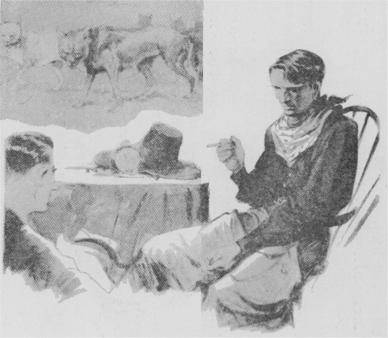

これはアメリカのアーネスト・トムソン・シートンという人が書いた物語で、文中『私』とあるのはシートン氏のことです。シートン氏は幼いころから動物が大好きで、動物に関する物語と絵をかくことを一生懸命勉強しました。そしていつも山岳や草原に露営の生活をして、野生動物を深く観察し、りっぱな動物物語をたくさんあらわしました。この『狼の王ロボ』は、その中でも傑作といわれる面白いものです。
「カランポーの谷の王様おおかみロボの首に、一千ドルの
懸賞がかけられた。」
このうわさは、土地の新聞から全メキシコへひろまった。カランポーというのは、北部メキシコを流れている川の名だ。その川の
流域には、広々とした草原が開け、それが大きな牧場になっていた。ところがこの谷に一群のおおかみがすんでいて、しきりに
家畜をあらす。そのおおかみの群れの王と見られるのは、土地の人々からロボと
呼ばれる、まことに悪がしこく
獰猛なやつであった。
土地の
羊飼達はもちろん、よそからもおおかみ狩りを
自慢の連中が続々とやってきて、この
悪獣を
退治しようとしたのであったが、いずれも失敗して引きあげる。そこでこの一千ドルの
懸賞広告が新聞にでたのである。
そのときカランポーに住む友人から、
私のところへ、このおおかみ狩りをすすめる手紙がきた。その一節に、こんな文句があった。
「このロボというのは、
灰色の大きなおおかみで、カランポー
狼群の王といわれるだけにとても
知恵がはたらき、毒薬にもわなにもかからない。この地方の牧場でその害をこうむらないものはなく、深夜はるかにその長くひいた
異様なほえ声を聞くと、たれでもぞっと身ぶるいがするという。ロボの一
党は、非常に数が多いようにいわれているが、私の調べたところでは、五、六頭にすぎないようだ。しかし、どれもこれも
狂暴なやつばかりである。私には今のところそれを退治るいい工夫が
浮かばん。このさいきみの
腕にたよるほかない……」
私は以前、おおかみ
狩りをしたことがあるが、おおかみを追っかけまわる
痛快さといったらない。そのときの味がわすれられないので、友からの手紙を受けとるとろくに準備もしないでカランポーへ乗りこんだ。
友は大喜びで
私を
迎えてくれた。その晩は何年ぶりかで一
緒に酒を
酌みかわしながら、私はくわしくようすを聞いた。
友は語る、
「このあいだも、テキサス州から、タンナリーという男が、おおかみ
狩りはおれにかぎると大元気で乗り込んできた。相当経験があるらしく、
小銃や
短銃も高価なものをもち、乗馬と二十頭の
猟犬を連れていた。それで『
明日にもロボの首を取ってきて
床の間の
飾り物に
［＃「飾り物に」はママ］する』と大きなことをいっていたものさ。ところが初日でみごと失敗してしまった。というのは、このタンナリーは、テキサス州の
平な草原のおおかみ狩りにはなれてもいたろうが、このカランポーの谷は、高低があって、川の支流が
縦横にいりまじっている。猟犬はきたばかりの不案内の土地なので、
狼群を追いつつ四方へちっていったのはいいが、勝手を知ったロボの群れにひどい
逆襲をくらって、夕方帰ってきたのは、たった六頭。その
中二頭はあばらをかみさかれているというみじめさだ。タンナリーはその後も二回でかけたが、一
層の不成功で、最後の日には、その乗馬が
断崖からころがり落ちて死んだ。彼が、すっかり力をおとして、テキサス州へ帰ったのは一昨日のことさ。」
翌日から
私は地形を見にまわった。なるほどカランポーの谷は、土地の高低があって、川の流れも多く、とても馬や
猟犬でおおかみを追いまわせそうもないところだ。
「毒か、わなを用いるほかない。」と、
私は友に語ったのだが、大きいわなは持ってゆかなかったので、まず一
服毒を盛ることにした。
私は、わかい
牝牛の
腎臓脂肪へチーズを交ぜ、それを
陶器皿に入れてとろ火で
煮た。
金物の
臭いを
避けるために、中の
骨を小刀がわりに使った。この
煮物をさましていくつもの
塊に切り、その切り口へあなをあけて、毒薬を
詰め、その上へチーズを厚くぬってふたをした。このご
馳走をつくるあいだ、
私は人間の
臭いがつかないように注意して、牛のほふったばかりの
温かい血へ
浸した
手袋をはめ、また私の息がこの
餌の肉へふきかからないように、マスクをかけた。こうして
丹念につくったご
馳走を、同じ血へ浸したわらづとの中に入れた。それを持ってカランポーの谷を一
巡し、一
粁おきぐらいに一つとずつを草のあいだへおいてきた。
狼群は
鉄砲をおそれて日中はあまりでないし、また人間の
姿が見えると、さっさと
逃げてしまうので、この日は
別段危険もなかった。
その夜、たしかにロボのほえる声が聞こえたというので、
私は大喜びで
翌朝早く結果を見にでかけた。
はたしておおかみの
足跡はたくさんある。ロボの足跡は、
普通のおおかみよりは大きいのですぐわかった。その足跡から
推すと、
背の高さ一メートルにちかく、体重も六、七十キロくらいはたしかにある。おそろしくたくましいやつらしい。
やがて最初の
餌の肉のところへくると、大きな足跡が、そこへ立ちどまった形に残っていて、
肉塊はなくなっている。
「しめた！」
私は
胸をおどらして、ついてきた
者達にほこった。
「やっこさん、一、二
粁も先にきっとかたくなっているぞ。」
私どもは馬に一むちくれて、
威勢よくつぎの
餌肉のところへいった。はたしてそこにもない。私は
狂喜して、
「ロボばかりでなく、あの
畜生ども、
枕を
並べて往生しているにちがいない。」と
叫んだ。
その付近を見まわったが、しかしおおかみの死体はなかった。
足跡ばかりたくさんに残っている。第三番目の
餌肉へきてみたが、ここにも肉塊はなくて、足跡はさらに第四番目へつづいている。
私は「はてな。」と思った。と同時に
疑いと喜びとがごっちゃになってきだした。
私たちはだんだん心配になって、第四番目の
餌肉のところへきてみると、おどろいたことには、肉に手をつけてないばかりでなく、そこへ、前の三か所の餌肉も一
緒に
並べてあるではないか。しかもごていねいにも第五番目の餌肉までが、ちゃんと持ってきて積みあげてあるではないか。
「ヘー！」と、私は全身の血をぬき取られたような気持ちになった。りこうぶった私の
計略は、
狼王ロボのためにすっかり
裏をかかれてしまったのである。
「とてもこれは毒で
退治られる
代物ではない。」
と私はさじを投げ、大型のわなを
郷里へ注文してその
到着を待った。
そのあいだの一夜、おおかみの群れがすごいいたずらを演じて、カランポーの谷にすむ人たちを
興奮させた。
一人のわかい
羊飼いがその
模様を
私に物語った。
「
旦那、おおかみというやつは、
羊を食うのでなく、ただおどかしてかみ殺しては喜ぶのです。一
体、羊は、千頭から三千頭までを一群にして
一人二人の番人をつけておくのです。夜はかこいの中へ入れて、
両端の小屋へ番人が一人ずつ
寝ています。羊はちょっとしたことにもおどろく
臆病な動物ですが、中へ五、六頭の
山羊を入れておくと、羊はこの山羊をたよりに思って、夜などもなにかさわぎがおこると、みな
山羊のそばへより集まるのです。ところがあのロボの
悪党め、そこのことまでよく知っていて、
昨夜は先に山羊をかみ殺してしまったのです。羊どもはたよるものがなくて、八方へちりぢりになったものだから、とうとうかみ放題に二百五十
頭も殺されたのです。」
「まるで
子供が、
玩具のサーベルでトマトをやっつけるようなものだね。」と
私はあきれていった。
「まったくです。」と、
若者は話に油が乗って、
「あのロボのやつには、これまでにもう羊や
牝牛合わせて二千頭あまりやられています。一体おおかみは意地きたないやつで、なんでも
腹一
杯食いさえすれアいい。食べ物の
よしあしなんてかまわないのが
普通ですが、あのロボの
仲間にかぎっては、口がなかなかおごっていて、死んだ肉は食わない。人間がほふった
家畜は食わない。なんでも自分の歯でかみ殺した上等なのだけ食うのです。一番
好きなのは
当歳仔のやわらかな
牝牛で、年とった牛や馬は好かない。人間よりもよほどぜいたくです。また羊の肉もあまり好かない。ただ、かわいそうに
逃げまどうやつを
片端からやっつけてしまうのです。本当ににくいたらありゃしません。」
羊よりは、わかい
牝牛を
好むというのは初耳で、
私は話をそこへ向けると、
若者は、先年、ロボが牝牛をとり殺したという実見談をはじめた。
「
私はそのときはなれたところから見ていたのです。最初牛の群れとおおかみの群れとが原中でばったり出くわしたと思ってください。いばったやつで、ロボめ、自分は手出しもせずに、仲間の
奴等に仕事をまかせているのです。ロボのつぎの位にいるブランカという白おおかみが
大将になって、五、六匹のおおかみが牛の群れへおそいかかってきました。牛の中には一
頭牝牛の
当歳仔がまじって、これは後列へかくれていました。牛の群れは一列に戦線を張って角をふりたてたので、白おおかみ等もちょっと手がでません。すると、さっきからそれを見ていたロボのやつ、一声ほえると、横合いからだしぬけに牛の群れへおどりかかった。牛どもはたちまち列をみだして
逃げる。ロボはめざす
牝牛へせまる。牝牛はやっと七、八十メートルも逃げたが、たちまち追いつかれてしまった。ロボはその
喉に食いついたなり、身を
沈め、うんとふんばると、
牝牛は、角を地についてまっさかさまに大きくとんぼ返りに
倒れる。はずみをくってロボもはね飛ばされそうになったが、
腰の強いやつで、からだをぴたりと地につけてぐっとふみこたえます。そこへ白おおかみブランカはじめ
仲間が競いかかって、見る見る
牝牛の息の根をとめてしまいましたよ。ロボのやつ、
獲物は仲間にまかせてけろりとしているのです。
私は大声に
叫んで、馬に乗って追っかけると、おおかみどもは
鉄砲がこわいものだから、さっさと
逃げていく。
私はいい機会だと思って、持っていた毒薬を手早く、たおれた
牝牛の体へ二個所に注ぎこんで、そのまま家へ帰りました。おおかみどもは自分の歯でかみ殺した動物は安心して食う習慣ですから、あとでもどってきて、その肉を食うにちがいないとにらんだのです。
翌朝私は、
「あのロボのやつ、いまごろはかたくなってくたばっていることだろう。」と勇んで、
昨日のところへ
行ってみると、
小面にくいたらありゃしません。毒を
注したところだけ、きれいにさき
捨てて、毒のない部分をさんざん食いあらしていたのです。一
服盛ろうたってあいつにゃ
駄目です。」
そのうち、注文したわながたくさん
到着した。
私は大急ぎでそれを組み合わせ、夜になってから原の方々へ
埋めておいた。
翌日見まわると、ロボの
足跡はわなからわなへと続いていたが、わなはみなほじり出されて、
鉄鎖も
丸太もむきだしになっている。足跡から
判ずると、ロボは
狼群の先に立ってわなへ近よると、
仲間を止めて、自分ひとりでうまい
工合にかきだしてしまうらしい。
私はいろいろ工夫をこらし、方法をかえていくたびもわなをかけてみたが、ロボはなかなかたくみにわなをかきだしてさらしものにするのである。
だが、このカランポーの
狼群の行動には、
私にとけないことが一つあった。それは私のこれまでの経験によると、おおかみの群れというものは、一
匹の指導おおかみにしたがうのがならわしであるのに、ここのはおりおりロボの大きい
足跡の前にやや小さい足跡がついているのである。
ところが、ある日、
牛飼いがやってきての話に、
「
私は
今日例のおおかみどもがずっと向こうの方を歩いているのを見ましたが、白のブランカのやつが、ときどきロボの先になってゆくのですよ。」と。
私ははたと手をうった。
「それでわかった。そのブランカはめすなのだ。もしおすおおかみがそんなですぎたことをしたなら、ロボがすぐかみ殺すはずだ。小さい
足跡が先に立っていたのもそれでわかった。」
そこで新工夫が
浮かんだ。
私はわかい
牝牛をほふってその死体のまわりに、わざと地上にむきだしにしたわなを二つおいた。それからその死体から首をきり取って少しはなれたところへおき、その周囲へ二つの
鋼鉄製のわなをうめた。この仕事をするあいだ、私は私の手足や道具などをその
牝牛の血に
浸し、地面へも同じ血を一
杯にまいた。このしかけがすむと、今度はおおかみの皮でその辺の地面を一帯になでておき、またおおかみの足でわなの周囲にたくさんの足跡をつけた。この首と
胴体とのあいだはせまい通路になっているので、その通路へ一番
精巧な二つのわなをうめ、そのわなの
端を
牝牛の首に結びつけた。
私が知っていることでは、おおかみというやつは、動物の死体を見つけると、それを食おうという気がなくても、きっと近よって、それをかいではいろいろとためしてみるものである。で、
私はこのカランポーのおおかみどもも同じ習慣をもっているとにらんだのである。ロボはまたも私の
計略を見やぶるかもしれない。けれど、私の心の中にはべつな考えがあったのである。

翌朝、
私たちは馬へ乗って
昨日のわなの辺を見まわりにいった。おおかみの
足跡はたくさんにある。私は
胸をおどらした。急いでその跡をたどってみると、
牝牛の首もわなもない。私はいよいよ胸の
鼓動をたかめて、その辺の
足跡をこまかにしらべた。すると、ロボが他の
仲間を牛の死体に近づけないよう注意しているあいだに、やや小さい一
匹のおおかみが、少しはなれている例の首の方へ歩みよって、そこのわなにひっかかったらしい跡がある。
私は、しめたと思った。
そこでその足跡をつけてゆくと、二キロ足らずのところで、はたせるかな、白のめすおおかみブランカが、わなにかかった足をひきずりながら、
牝牛の首をくわえてかけてゆくのに追いついた。牛の首は六、七キロもあろうというのに、ブランカのかける早さは人間の足では追っつけないくらいだった。しかしゆく先には岩石がたくさんあったので、とうとう牛の角が岩へひっかかり、ブランカは動けなくなってしまった。
私たちが近寄ると、ブランカはきっと立ちあがってものすごい長ぼえをした。すると、はるかに
木蔭から、同じ調子の一
層高いほえ声がひびいてきた。それはロボの声にちがいない。私たちはすぐ
得物をふりあげて近寄りざま、ブランカをなぐりつけた。ブランカは力がつきて最後の悲鳴をあげてぐたりと横に
倒れた。私は
輪繩をその頸に投げかけて、その
端を馬につなぎ、一むちあてると、馬は
家の方へ
駈け出した。
そのあいだ、ロボは遠くでしきりにほえていたが、
鉄砲がこわいと見えて私たちのそばへよりつかなかった。
この日、夕方までロボの遠ぼえがきこえていたが、日が
暮れると、その声はだんだんに近づき次第にかなしい調子を
帯びてきかれた。あらあらしい声でなく、長く引いた苦しげなうめきのようにきこえた。
「ブランカ、ブランカ！」と
呼んでいるかのようだ。
夜がふけると、その声は一層近くなって、
私たちが昼間ブランカを殺した辺にきた。そこにはブランカの血がたくさんにたれていたので、かれはそこでおこったできごとをさとったことであろう。
羊飼いどもも、「これまで、こんなにおおかみの悲しげな声を聞いたことはありません。」といった。
この夜、ロボがただ一
匹で来たことは、その
足跡で知った。そしていつもとちがって、とても不注意にかけまわったようすである。かれは
妻のブランカを殺されたために心がみだれていることがこれでわかる。かれはブランカの死体をさがしにきたが、それを
得られなかったうらみに、戸外五十メートルのところで、番犬をさき殺して去った。
私は、ロボが
狂乱しているのを知ったから、いよいよわなを要所要所にかけておいた。一度はたしかにその一つにひっかかったが、ロボはそれをねじ切って
逃げた。その力の強さにはいまさらながらおどろかされた。ロボはブランカの死体を見つけるまでは、その辺を去らない気持ちらしい。
私はこの機会にかれを
退治してやろうと心をくだいた。
「おしいことだった。ブランカを殺さずに、いけどっておいておとりにしたら、
翌日の
晩には、きっとロボをつかまえることができたであろう。」とくやしかった。
私は、ありたけのわなを百三十個集め、それを残らずしかけて土にうめた。そのときは毛布を地べたにひろげた上に
坐って仕事をし、人間の
臭いが残らないようにした。そして、あたり一帯にブランカの死体をひきずりまわして、土にその臭いをうつした。それからブランカの足でもってわなのあいだあいだへ
足跡をつけた。こうしてできるだけ用心をして作戦計画を立て、さてその結果はどうかと待った。
その夜中、一度
私はロボのほえ声を聞いたように思った。が、しかとしなかった。
翌日私は早く
見廻りに出かけた。しかし百三十個も飛び飛びにわなを見まわるので、北の谷間を残して日が
暮れた。なんの
得るところもなく、私たちは家に引きあげた。すると夕飯の席で
一人の
羊飼いが語った。
「
今朝、北の谷で牛の群れがなんだかさわいでいたようです。なにかあったのではないでしょうか。」と。
私は
翌朝早く
胸をおどらして北の谷へとでかけた。わなをしかけておいた場所へくると、
突然大きな
灰色の
姿が、むくりと立って
逃げ出そうともがいた。私はおどろきとおそれと喜びに
瞬間棒立ちになった。
私はこのとき、はじめてカランポーの谷のおおかみの王ロボの姿をはっきりと見たのである。かれは二昼夜のあいだ、わなを抜けようと苦しんだので、いまはつかれはてている。それでも私が近よると、
頸毛をさかだててものすごくうなり声を出し、たちまち深い低いほえ声をしてカランポーの谷をふるわせた。その叫び声の中には、
仲間の救いを求める合い図が
含まれたことであろう。しかし他のおおかみはついに姿を見せない。ロボは必死に身をもだえ、私へ
跳びかかろうとするが、わなが四つ連結しているので、重さも百二十キロからある。いくらもがいても
丸太と
鉄鎖が一
層もつれるばかりで、さすがのロボもいまはどうしようもないのである。それでもその雪のように白い大きいきばをむき出して、鉄鎖をかみ切ろうとする。そのすごさは身の毛がよだつほどである。私が
銃床をその鼻先へさしだすと、はげしくかみついてみごとな歯なみのあとを深くきざみつけた。（私はいまもその
銃を記念として大事にしている）
両眼は
憎しみといかりに青く
燃え、私をにらんで底うなりを発したとき、私の乗馬は
震えてあとずさりした。しかしもうロボもうえと
苦闘につかれはてているので、やがてぐたりと地べたに横になってしまった。
私は
輪繩を手にしたが、ふとかわいそうだという気持ちがして、
「こら
悪魔、悪業の数々は今報われるときがきたぞ、さ、観念せ。」
私はそういいながら、ぱッと
繩をその
頸へ投げかけた。ところがさすがは
狼王、ふっと身をかわして繩をくわえとり、その結び目をかみきってずたずたにした。
どうせ、いざとなれば、
銃丸一
発でしとめられるのだが、私はそのりっぱな皮を
傷つけたくなかったので、他の
繩を取って、まず木の
枝をロボへ投げると、かれはそれを歯で受けとめた。そこで、私はさっと輪をなげてかれの
頸にかけて
締めてしまった。そのままぐっとひきしめて息の根を
絶とうとする
仲間を、私は、
「待った、殺さずに生かして持ち帰ろう。」とおしとめずにはいられなかった。
ロボはもう向かってくる勢いもないから、
私達はその口へ
棒をかませ、
太綱であごをしばった。いまはかれは、まったく観念したような目で私たちを見ている。
「
年貢のおさめどきがきた。どうでも勝手にしてくれ。」
そういったようすである。やがて私たちへ見向きさえしなくなった。
そこでみなでロボの足をしばって馬へ結えつけた。ロボはうなりも
叫びもせず、だまってなすがままに身をまかせた。その目は光っているが、私たちには向けられていない。遠くの草原をじっと見ている。そこには
永い年月かれが
君臨した広々とした領地がある。かれの部下は王を失って、いまはその谷間の
奥深く
逃げていったことであろう。
私たちは家に帰ってから、ロボに
頸輪をかけ、じょうぶな
鉄鎖でつなぎ、手足を自由にし、
輪繩を
外して家の前のくいへ結びつけた。そこで始めて安心して私はロボのからだを細かにしらべた。世間の噂では、「ロボの
頸に
金環がついている。」とか、また、「かれの
肩には
悪魔の
仲間である印として
逆十字の
斑点がある。」とか伝えられていたが、それはみなうそであった。ただその
腰に大きい
傷痕が見られたのは、前日タンナリーがロボがりにきたとき、その
猟犬がかみついたあとと知られた。
私はロボの前へ肉と水をおいたが、かれは見向きもせず、しずかに
腹ばいになってはるかの草原を見つめている。私がステッキで
触れても身動きもしない。日が
暮れてもかれは一心にかなたを
眺めていた。
「今夜、
仲間のおおかみどもがくるかも知れない。」
私はみなへ注意しておいたが、ロボは一度仲間を
呼ぶようなほえ声を出したきりで、なにごともなかった。
力尽きたしし、
翼の自由を失ったわし、またはめすを失ったはとのように、ロボも
妻のブランカにさきだたれて力をおとし、この世に望みを絶ったのであろう。
翌朝起きてみると、かれはしずかに
眠るが
如く横たわって冷たくなっていた。
私はその
頸から
鉄鎖を取り、
羊飼いに手伝わせて、ロボをブランカの死体をおいた
小舎へ運び入れて、そのかたわらに
並べてやった。
そのとき羊飼いはいった。
「ロボはやっぱり王様だったな。その死に方まで……」
私は、この羊飼いが、私の心持ちをそのままいってくれたような気がして、だまってなんどもうなずいたのだった。
（昭和一三年五月号）